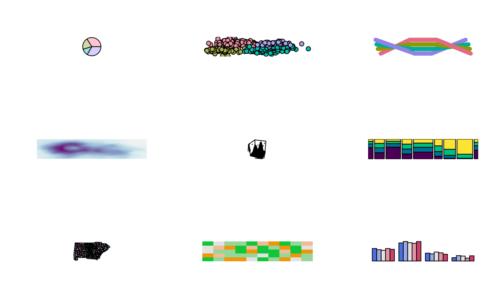

Color Palette Demonstration Plot
demoplot.RdDemonstration of color palettes in various kinds of statistical graphics.
demoplot( x, type = c("map", "heatmap", "scatter", "spine", "bar", "pie", "perspective", "mosaic", "lines"), ... )
Arguments
| x | character vector containing color hex codes. |
|---|---|
| type | character indicating the type of demonstration plot. |
| ... | currently not used. |
Value
demoplot returns invisibly what the respective base graphics
functions return that are called internally.
Details
To demonstrate how different kinds of color palettes work in different
kinds of statistical displays, demoplot provides a simple convenience
interface to some base graphics with (mostly artificial) data sets.
All types of demos can deal with arbitrarily many colors. However, some
displays are much more suitable for a low number of colors (e.g., the pie
chart) while others work better with more colors (e.g., the heatmap).
References
Zeileis A, Fisher JC, Hornik K, Ihaka R, McWhite CD, Murrell P, Stauffer R, Wilke CO (2020). “colorspace: A Toolbox for Manipulating and Assessing Colors and Palettes.” Journal of Statistical Software, 96(1), 1--49. doi: 10.18637/jss.v096.i01
See also
Examples
## all built-in demos with the same sequential heat color palette par(mfrow = c(3, 3)) cl <- sequential_hcl(5, "Heat") for (i in c("map", "heatmap", "scatter", "spine", "bar", "pie", "perspective", "mosaic", "lines")) { demoplot(cl, type = i) }## qualitative palettes: light pastel colors for shading areas (pie) ## and darker colorful palettes for points or lines demoplot(qualitative_hcl(4, "Pastel 1"), type = "pie") demoplot(qualitative_hcl(4, "Set 2"), type = "scatter") demoplot(qualitative_hcl(4, "Dark 3"), type = "lines") ## sequential palettes: display almost continuous gradients with ## strong luminance contrasts (heatmap, perspective) and colorful ## sequential palette for spine plot with only a few ordered categories demoplot(sequential_hcl(99, "Purple-Blue"), type = "heatmap") demoplot(sequential_hcl(99, "Reds"), type = "perspective") demoplot(sequential_hcl(4, "Viridis"), type = "spine") ## diverging palettes: display almost continuous gradient with ## strong luminance contrast bringing out the extremes (map), ## more colorful palette with lower luminance contrasts for displays ## with fewer colors (mosaic, bar) demoplot(diverging_hcl(99, "Tropic", power = 2.5), type = "map") demoplot(diverging_hcl(5, "Green-Orange"), type = "mosaic") demoplot(diverging_hcl(5, "Blue-Red 2"), type = "bar")## some palettes that work well on black backgrounds par(mfrow = c(2, 3), bg = "black") demoplot(sequential_hcl(9, "Oslo"), "heatmap") demoplot(sequential_hcl(9, "Turku"), "heatmap") demoplot(sequential_hcl(9, "Inferno", rev = TRUE), "heatmap") demoplot(qualitative_hcl(9, "Set 2"), "lines") demoplot(diverging_hcl(9, "Berlin"), "scatter") demoplot(diverging_hcl(9, "Cyan-Magenta", l2 = 20), "lines")